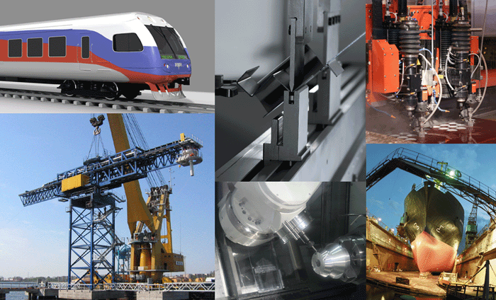
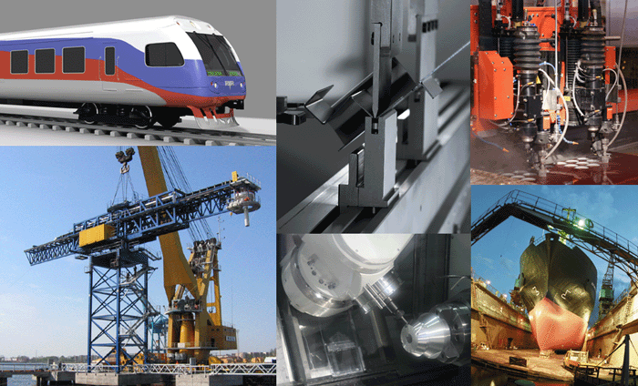
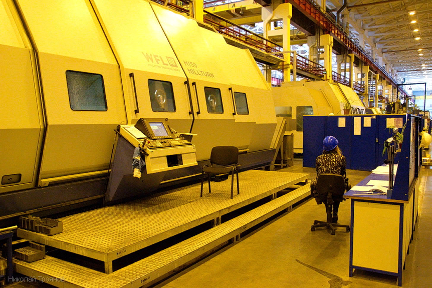
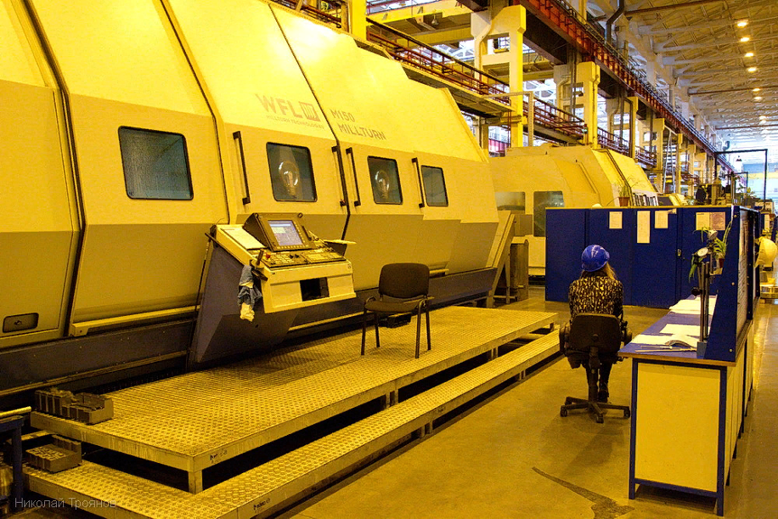

В свою очередь, эти группы делятся на следующие отраслевые подгруппы:
тяжёлое машиностроение;
общее машиностроение;
среднее машиностроение;
точное машиностроение;
производство металлических изделий и заготовок;
ремонт машин и оборудования.
Общее машиностроение
Машиностроительная промышленность является ведущей отраслью народного хозяйства, которое определяет дальнейшее ускорение и развитие научно-технического процесса в других отраслях. Основными задачами машиностроения является непрерывное повышение качества машин и оборудования, совершенствование роста производительности труда на предприятиях. Выполнению этих задач способствуют организация работы на основе современных средств производства, внедрение передовой технологии и прогрессивной технологической оснастки.
Общее машиностроение представлено:
транспортным машиностроением, состоящим в свою очередь из следующих отраслей:
подъёмно-транспортного оборудования и машин (подъёмно-транспортное машиностроение): грузоподъёмных кранов, лифтов, подъёмников (вышек), машин непрерывного транспорта (конвейеров и пр.);
тяжёлых экскаваторов;
оборудования для генерации и передачи электрической энергии (энергомашиностроение);
и другого оборудования.
Разработка и производство технологического оборудования по отраслям:
разработка и производство технологического оборудования для лёгкой и пищевой промышленности (оборудование лёгкой промышленности, оборудование пищевой промышленности);
строительство роботов (робототехника);
строительство бытовых приборов (промышленность бытовых приборов и машин).
В советское время Министерством среднего машиностроения (Минсредмаш) называлось ведомство, главными объектами которого были разработка и производство ядерного оружия. Оно было организовано в 1953 году, и в его структуру входили собственные рудники, заводы, НИИ, транспорт, сеть связи, вузы и пр.
Энергетическое машиностроение
Производство металлических изделий и заготовок
Основными элементами развития современного машиностроения является совершенствование средств производства, методов организации производства (к примеру использование технологий серийного и массового изготовления), переход к стандартизации, автоматизации и информационному обеспечению процессов.
 



 
